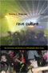
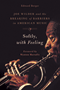
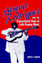

|
Rave Culture
The Alteration and Decline of a Philadelphia Music Scene
Anderson, Tammy L.
Charles Horten Cooley Award, 2010 |

|
Softly, with Feeling
Joe Wilder and the Breaking of Barriers in American Music
Berger, Edward
Association for Recorded Sound Collections' Award for Excellence in the category of Best Historical Research in Recorded Jazz, 2015
|

|
Arsenio Rodr�guez and the Transnational Flows of Latin Popular Music
Garcia, David F.
2007 Certificate of Merit for Best Research in Recorded Folk, Ethnic, or World Music from the Association for Recorded Sound. |

|
Whisper Not
The Autobiography of Benny Golson
Golson, Benny and Jim Merod Association for Recorded Sound Collections' award for Best History Book in the category of Best Historical Research in Recorded Jazz, 2017
One of the Best Jazz books of 2017 by New York City Jazz Record
|

|
I
Wanna Be Me
Rock Music and the Politics of Identity
Gracyk,
Theodore
Co-Winner of the International Association for the Study
of Popular Music Book Award, 2002 |

|
Jookin'
The Rise of Social Dance Formations in African-American Culture
Hazzard-Gordon,
Katrina
Honorable Mention of the De La Torre Bueno Prize from the
Dance Perspectives Foundations, 1991 |

|
I Walked with Giants
The Autobiography of Jimmy Heath
Heath, Jimmy and Joseph McLaren, foreword by Bill Cosby, introduction by Wynton Marsalis
Best Book of the Year from the Jazz Journalists Association, 2011 |

|
Sounds of the Modern Nation
Music, Culture, and Ideas in Post-Revolutionary Mexico
Madrid, Alejandro L.
International Casa de las Am�ricas Musicology Prize, 2005
|

|
East
Indian Music in the West Indies
T�n-Singing, Chutney, and the Making of Indo-Caribbean Culture
Manuel,
Peter
Gordon K. Lewis Award from the Caribbean Studies Association,
2000 |

|
Caribbean
Currents
Caribbean Music from Rumba to Reggae
Manuel,
Peter with Kenneth Bilby and Michael Largey
Outstanding Academic Books, Choice, 1996
Gordon K. Lewis Memorial Award for Caribbean Scholarship, Caribbean
Studies Association, 1996 |

|
Chilean New Song
The Political Power of Music, 1960s-1973
McSherry, J. Patrice
Cecil B. Currey Book Award, 2015
|

|
Swingin'
at the Savoy
The Memoir of a Jazz Dancer
Miller,
Norma with Evette Jensen
Norma Miller is a recipient of the 2003 National Endowment
for the Arts National Heritage Fellowships, 2003 |

|
Songs
of the Caged, Songs of the Free
Music and the Vietnamese Refugee Experience
Reyes,
Adelaida
Book Award from the U.S. Branch of the International Association
for the Study of Popular Music, 2000 |

|
Sweating Saris
Indian Dance as Transnational Labor
Srinivasan, Priya
Emory Elliott Book Award, 2012 |

|
Whose National Music?
Identity, Mestizaje, and Migration in Ecuador
Wong, Ketty
Latin American Studies Association Ecuadorian Studies Section Book Prize for the most outstanding work published in the field of Ecuadorian studies, 2012 |